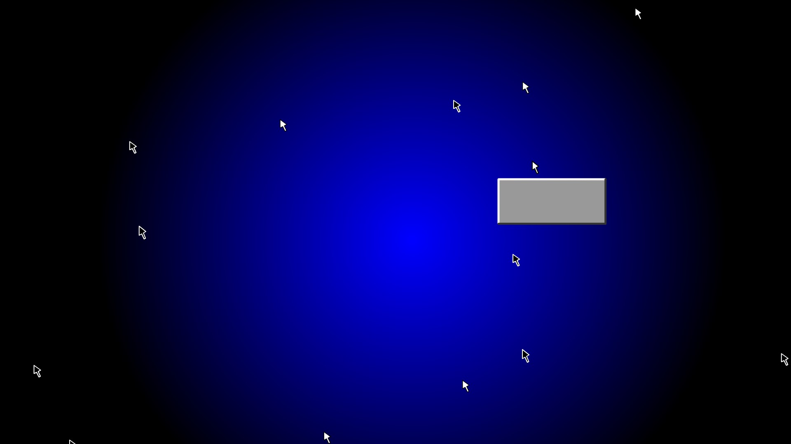
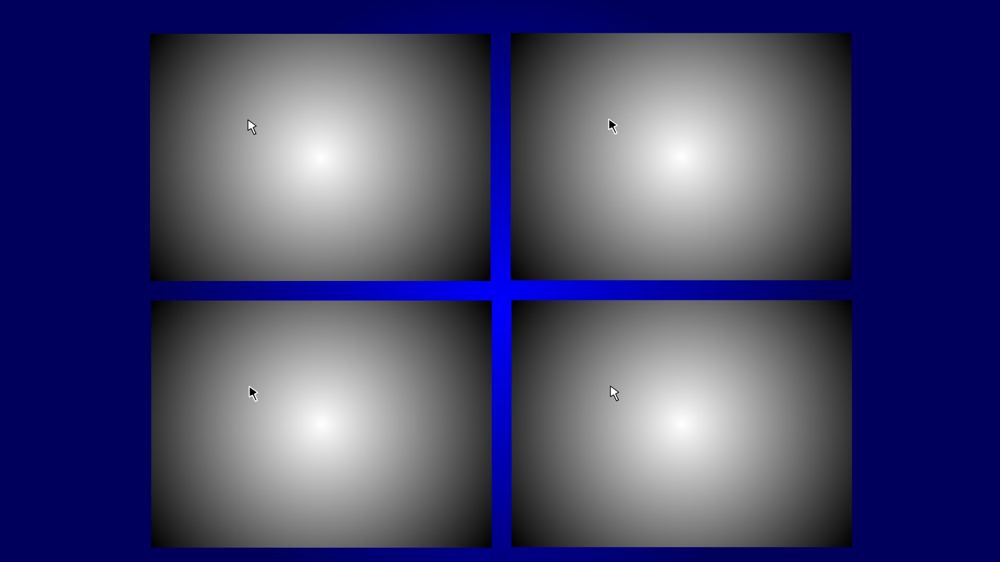
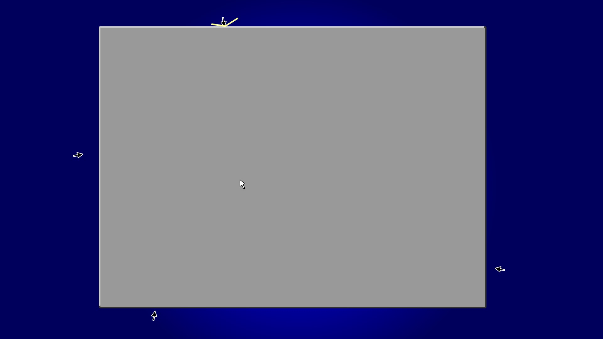
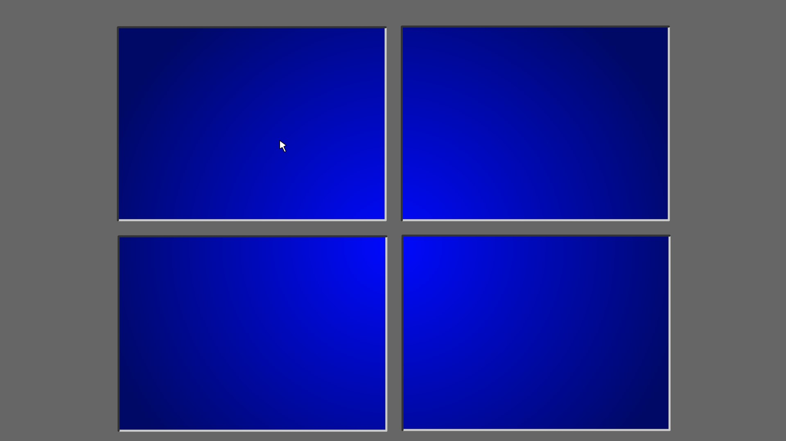

Description: Standalone Application built on Macromedia Flash V4. This piece was originally viewable on all Operating Systems/Web Browsers when the Flash Plugin was supported.
Download: CURSORCON.EXE Date of release: D:05/M:03/Y:2002 Last up date: D:07/M:04/Y:2002 Proprietary Status: Copyleft Produced at: www.rijksakademie.nl
SCREEN SHOTS    